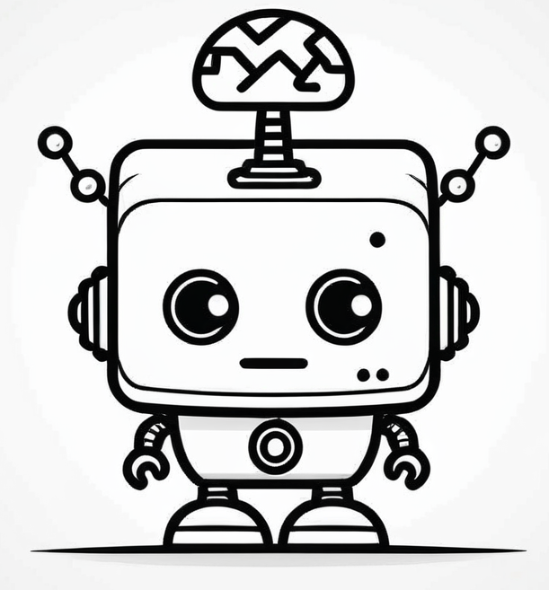
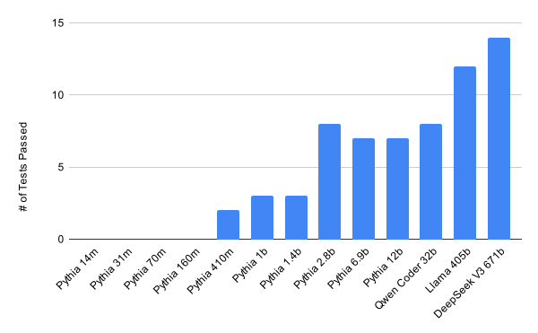

d_{model}

The last five years have shown us that large language models, like ChatGPT, Claude, and DeepSeek, can effectively write code in many domains. The excitement around these developments has been huge, with many people claiming that these models can write entire web servers and apps from scratch. Whats certainly true is that these tools have opened up programming to a whole new class of people who consider themselves non-technical.
But there are still many unanswered questions about this capability. How often, and in what situations, can LLM’s write correct code entirely on their own? And maybe more importantly, but harder to answer: Do LLM’s “understand” the code they are writing?
Understanding is a tricky concept to measure. Some would say that LLM’s can’t have understanding, because they aren’t biological organisms with sentience. But they certainly have something akin to “thought processes”: chains of predictions that determine their final outputs. Recently, it’s become possible to study these processes more deeply, measuring internal “beliefs” of the model as they think. This gives us a powerful tool for determining what kinds of problems LLM’s falter on, when they’ll succceed, and when they are “thinking through” problems more fully versus just guessing at a solution.
So far, these techniques for measuring internal model state have been mostly applied to chatbots writing normal text, what we call “natural language” (as opposed to computer languages). This makes sense, since some of the most critical LLM tasks involve chatting with a user, and some of the most interesting concepts to measure, such as honesty or power-seeking, apply most readily to these conversations. But it’s pretty hard to say quantitative things about natural language concepts, so our ability to rigorously study internal representations is limited to smaller scales, where we can read over chatbots output as humans and determine whether their level of “honesty” (or some other interesting concept) matches the internal thing we’re measuring.

Code, on the other hand, is another matter. Humans have been studying properties of code for a long time, and there are many abstract properties that can now be determined using static analysis. If we pick the right properties, we don’t need to worry about our ability to label data; static analysis can do that for us, so we can easily scale up and train on thousands of examples generated from scratch.
In that spirit, we wanted to start with a simple property that comes up in every programming language, nullability. Nullable values are represented differently across languages; as null pointers in C or C++, with explicit Option types in Rust, and with special nil or None values in dynamic languages like Javascript, Lisp, or Python. In every case, understanding where values can be nullable is necessary for writing even basic code, and misunderstanding where they are nullable can often be a source of bugs.
Do our models understand when a value is nullable? They must, to be able to write code that deals with nullable values, but we haven’t known what form this knowledge takes, what situations are likely to confuse the model. Until now1.

Before we get into the nitty-gritty details, lets take a step back. To set up this work, we’ll first want to talk about what nullability actually is, and how we can define it formally and reason about it. Then we can start to measure what situations models are good at reasoning about nullability. Next, we’ll introduce techniques that have been used to “probe” the internals of a model for different concepts. Finally we’ll put it all together into a nullability probe, that can tell you at any variable location in the program, whether the model thinks the value there could be null.
Lets say you’re writing a Python program with your LLM assistant.
You’ve reached some point where you need to do something with a variable
called num. Maybe you’re building a list of numbers called
positive_nums. How do you proceed?
The answer often depends on the context in which you’re working. If
num and positive_nums are the things in scope,
then you might guess that you should write the lines:
if num > 0:
positive_nums.append(num)And if num is always a concrete number, as its name
would suggest, then this is probably the correct code. But variable
names don’t alway convey everything important about them, and it might
be the case that num could be None. If so, you’ll instead
want to write:
if num is not None and num > 0:
positive_nums.append(num)In this case, the way you want to use num depends on
whether it could be None or not. That is, whether num is
“nullable”. In Python that means having an Optional type
(Optional[int] rather than int).
Determining whether num is nullable in this context
amounts to type inference, and it can be quite complicated in
the worst case. Fortunately, in many cases it’s quite simple, involving
applying just a few rules. For instance, if num is the
parameter to a function you’re inside, and the function declares the
type of num in its parameter list, then you can determine
nullability from that type. So, if your context is:
def foo(num: int):
positive_nums: list[int] = []
if num...then you know you don’t need to check for None, whereas if it’s:
def foo(num: Optional[int]):
positive_nums: list[int] = []
if num...then you know you do need a None check.
You could instead just ask your LLM assistant to complete the line.
But how does your assistant know if num is nullable? Our
experiments show that LLMs learn to approximate the same typing rules,
by analyzing millions of programs.
If we ask an LLM early in it’s pre-training process to complete the program above, it produces:
def foo(num: Optional[int]):
positive_nums: list[int] = []
if num===.is_a(): ===This is correct Python syntax, but it only works if num
is an object with a is_a() method, instead of an optional
integer.
Train the LLM for a little longer, and it’ll produce:
def foo(num: Optional[int]):
positive_nums: list[int] = []
if num=== > 0: ===This is closer, in that its figured out that num is a
number instead of an object, but it still isn’t reading the function
type signature and realizing that num could be None. Keep
training it though, and eventually it will learn to insert the None test
depending on the type signature of the function.
def foo(num: Optional[int]):
positive_nums: list[int] = []
if num=== != None and num > 0: ===This rule about function parameter type annotations is pretty simple alone, so relatively small models can learn it, relatively early in their pre-training process. Other, more complicated rules can take a little longer to learn.
For instance, if your program is:
if condition():
num = 7
else:
num = 9
...
if num...then num is a non-nullable number, and you can complete
the condition with < 0.
But if instead you’re dealing with
if condition():
num = 7
else:
num = None
...
if num...Then you’ll want a None check first.
This rule takes models a little longer to learn, but your highly-trained LLM assistant should make quick work of it. Our experiments show that as these rules get more and more complex, it takes LLMs longer and longer to learn them, and it also takes LLMs of more and more parameters to learn them at all.
We can measure whether LLMs understand these rules by just asking for completions, what we call an “external” measurement of the models understanding. But there are many places where variables appear where a completion won’t tell you what type the model thinks the variable has. We would still like to know whether the model thinks these variables are nullable at those locations, so we can instead look for an “internal” measurement of the models understanding.
We do so by looking at the activations of the model, meaning the values of each perceptron in the hidden layers. Together, these values give the entire internal state of the model at each token, and they can tell us what the model is “thinking” when processing that token. With the right tests, we can tell if the model is “thinking” that the current token is an optional variable, or a non-optional variable.
By the end of this post, we’ll be able to build a probe that uses the models activations to determine whether the model thinks a variable read corresponds to a nullable variable, and show that internal knowledge like so:
Before we start looking inside the mind of the models for the nullability concept, we want to make sure we’re looking at models that actually have this concept. This will allow us to look at models of various sizes and training levels without worrying about trying to conjure a concept from nothing.
To do so, we wrote fifteen partial-program tests which exercised a variety of type inference concepts, and checked if models could complete them. We go into a lot of detail on this process in our technical post, so we’re just going to show the highlights here.
For programs involving lists and for loops, the variable names and constant values heavily influence how able a model is to complete them correctly. On the other hand, when programs only involve other rules (such as those involving ifs and functions), variable names and constant values have negligable impact on the ability of the model to complete them correctly.
Pythia 6.9b
def main() -> None:
some_numbers = [1, -4, None, -3, 10, -1, None, None, 8]
result: list[int] = []
for num in some_numbers:
===if num is not None: ===
===result.append(num)===Pythia 6.9b
def main() -> None:
foo = [60, None, -33]
bar: list[int] = []
for corejoice in foo:
===if corejoice == 60: ===
===bar.append(core)===When code is fully annotated with type annotations, models can easily complete them just by reasoning locally. On the other hand, without type annotations, models have to reason a lot more globally, so it takes them a lot longer to reason about nullability that flows through multiple functions. When nullability flows through three or more functions, current state-of-the-art completion models stop being able to reason about it.
Deepseek V3
def main(x: int) -> None:
if x > 0:
value = "*" * x
else:
value = None
y = process_value(value) + 1
print(y)
def process_value(value):
===if value is None: ===
===return 2===
===else: ===
===return len(value)===Deepseek V3
def handle_value(value, guard):
if guard:
return process_value("Foobar") + 1
else:
return process_value(value) + 1
def main(x: int) -> None:
if x > 0:
value = "*" * x
else:
value = None
x = handle_value(value, x < 10)
print(x)
def process_value(value): === -> int: ===
===return len(value or "")===Models have a significantly harder time writing type annotations for Python code then they do reasoning about the types, or reading type annotations. This makes sense, since a lot of the Python code available in training data doesn’t use type annotations.
Pythia 6.9b
def program_48() -> None:
number: Optional[int] = None
square = get_square(number)
if square is not None:
print(f"Square of the number is {square}")
else:
print("No number provided to square")
def get_square(number: ===int) -> Optional[int]: ===Notwithstanding the above limitations, three Pythia sizes have a pretty reliable concept of nullability (2.8b, 6.9b, and 12b), and three more have an occasionally useful concept of nullbability (410m, 1b, and 1.4b).
For these experiments, and for our probing results later, we mostly tested on the Pythia model series. This is a nice series of models from EleutherAI with a variety of sizes. But what really makes Pythia useful is that they publish 154 different “revisions” of each model, where each is pretrained for a different number of steps. This lets us investigate how concepts evolve in the model during pre-training.
To help understand how these results apply to larger more capable models, here’s a graph showing how the Pythia models of different sizes perform on the external tests, compared with a few state-of-the-art completion models.

At this point, we’ve figured out how to roughly measure nullability understanding in the output of various language models, but we still don’t know what their internal representations might look like or when they emerge. Next, we detail how we train reading vectors (Sec. 2.3), using prompts designed to make the model think about the phenomena of interest (Sec. 2.2). Finally, in Sec. 2.5, we validate that these probes improve their understanding of nullability over the course of pretraining to the level that we expect from the external, or token-level understanding evals we describe in the previous section.
In this section, we review representation engineering (Zou et al. 2025) techniques that we will use to look for linear representations of nullability inside the model.
Zou et al. (2025) shows how representations can be extracted for concepts like “happiness”, “honesty”, and “fairness”. First, they construct many prompts which cause the model to act in a way aligned with the concept, and many which cause the model to act in a way aligned against the concept. For instance, they might prompt the model with “Pretend you’re a dishonest person. The Eiffel Tower is” and “Pretend you’re an honest person. The Eiffel Tower is”. Then, they take the internal activations which correspond to each, and try to extract a high-dimensional vector which points towards the states which are aligned, and away from the states that are not aligned. This vector can then be used as a linear model to measure how much of the concept is activated in the model during any given forward pass (e.g. for honesty, this gives us a lie-detector).

We avoid dealing with the ambiguities of natural language by working in a setting where the model needs only to analyze the nullability of individual variable occurrences. Specifically, we probe for “the variable I just generated refers to an nullable quantity”, so our prompts looked like:
def program_1() -> None:
def find_value(data: List[int], target: int) -> Optional[int]:
for value in data:
if value == target:
return value
return None
data = [1, 2, 3, 4, 5]
target = 3
result = find_value(data, target)
if resultWe queried o1, o1-mini, deepseek-coder, and claude-3.5-sonnet with the following prompt:
Generate me 100 typed python programs that use the Optional type, along with type annotations for any undefined functions that they use. Make sure that the programs are unique, and each involves at least eight lines of logic. Number each program from 1 to 100. Please put all the programs in a single file, with a main function that tests each. Don’t include any text before or after the code, just the code. I will be using mypy with the –strict option to check the code.
We label each variable read occurrence with nullability information derived from mypy, and prompt the “model under test” with a prompt consisting of the tokens up to and including the variable read occurrence.
Prior work focused their probing on a single layer, often handpicked based on prior papers. We probe all layers instead. We use Mass Mean Shift probing2 for each layer, because it’s been shown empirically (Li et al. 2024) to generalize better in high dimensional spaces than logistic regression.
We then tested two methods for determining the relative importance of the different layers — either allowing the magnitude of the difference of means vector to determine the importance of the layer in the final probe (MM), or to learn coefficients for each layer using linear regression (MM-LR). We found that which method is more accurate on test data varies over both model size and number of training steps.

In Fig. 1, we can see that pure mass means probing gives lower loss for smaller models (those with less than 410 million parameters), but that for larger models weighting layers using linear regression gives lower loss consistently.
Let us return to the reading diagram from the introduction, reproduced below.
This diagram is adapted from the style of reading diagram from Zou et al. (2025), but only show the activations on tokens that represent variable loads3. For each position of interest, we prompt the model with the partial program that consists of all tokens up to (preceding) and including that position. We then probe the model at the following token. We color the box above that position based on the output of the probe, and a scoring threshold inferred at train-time4.
In this program, there are sixteen tokens that correspond to variable
loads, and (correctly) all but one are marked as non-optional. The only
nullable variable in this program is result, since it comes
from find_value which returns Optional[int].5
In this section, we study the performance of our nullability probes across time and scale (Tigges et al. 2024). We use mass-means shift probing (Li et al. 2024) on all layers, and a linear regression to determine the weights of each layer.6
In fig. 3, we plot loss against scale and time. While we measured accuracy for every available Pythia model size, we exclude the smallest (14m) from this plot since it would exist entirely above the top of the plot.
One thing that is interesting to note is that models up to 1b reach a minimum loss before loss for this task climbing again. Charitably, this may be because the features beyond this point become more complex — less linear, or the represented features themselves represent more subtle concepts. Cynically, this reflects that models—small models in particular—do not uniformly improve at this task over training.
Our suspicion is that this pattern would continue even for the larger models if we continued to overtrain them for longer.
This post is meant to be a more approachable version of our technical post on the same work. If you’re looking for more numbers and science, look there.↩︎
That is, we set the reading vector to the difference between the mean activation for positive class and the mean activation for the negative class.↩︎
This is, of course, where we trained our probes, but there is also a practical reason: right after the model has generated a variable that will be written to, it often does not have access to the assigning expression or type annotation, giving it no way to determine if the value will be optional or now.↩︎
Red tokens are significantly below the threshold, and green tokens are significantly above it; tokens that scored near the threshold would have a near-white color, but no such tokens appear in this example.↩︎
When this variable appears for the first time, it is in
the if statement that checks if it’s None.
Then, the model knows it is nullable, and the results of the probe
reflect that understanding. But when it appears a second time on the
next line, in the format string of print, the body of this
if statement only runs if it is not None. The
model understand this as well, and the probe accurately reflects this.↩︎
Li et al. (2024) and Zou et al. (2025) suggest that mass means probes are best for reading, while the direction perpendicular to the separating hyperplane is best for intervention. However, previous work leaves open the question of cross-layer weights. We use LR on the cross-layer weights, thanks to our investigations above.↩︎